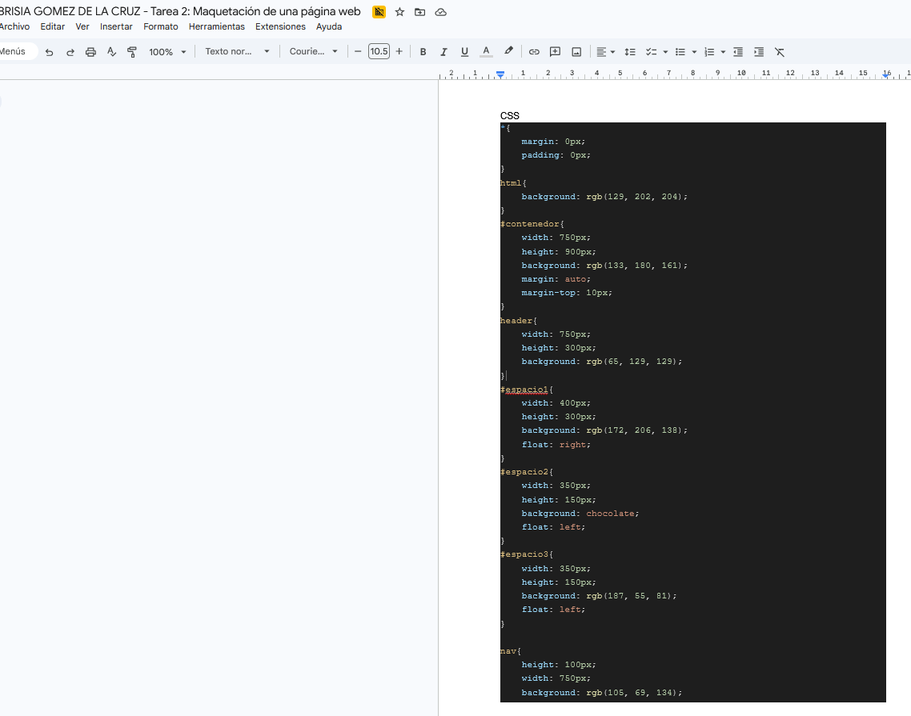
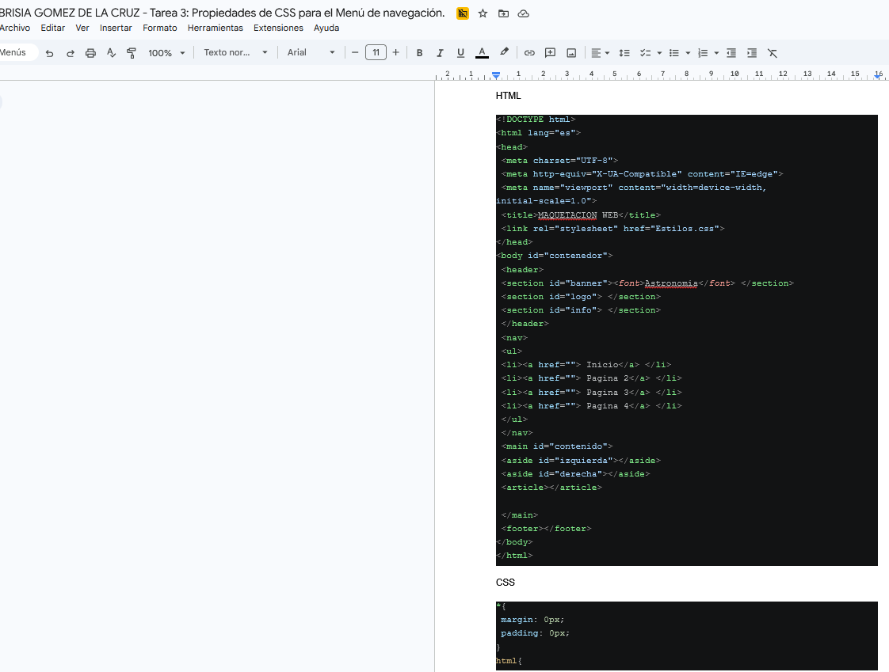
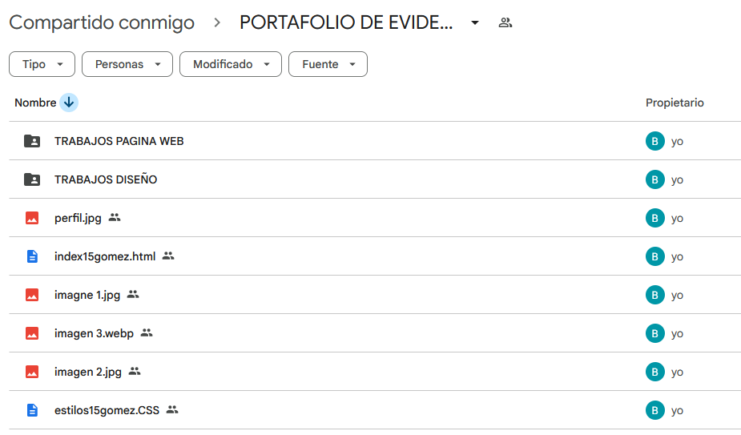

En esta fase, me enfoqué en aplicar propiedades avanzadas de CSS específicamente al Menú de Navegación. Utilicé la información proporcionada en clase para identificar qué propiedades (como padding, margin, display y colores) mejoran la experiencia del usuario. Al copiar mis códigos y tomar capturas de los resultados, pude comprobar cómo el lenguaje CSS cambia drásticamente la apariencia de un sitio. Aprendí que los detalles en el menú, como los efectos al pasar el cursor o la alineación, son los que realmente le dan un acabado profesional a una página web.

Finalmente, realicé una tarea de organización digital que es fundamental para cualquier diseñador o programador. Creé una estructura de carpetas para almacenar de forma ordenada todas las imágenes y archivos (HTML y CSS) de los dos primeros parciales de Diseño Digital y Páginas Web. Esta actividad me enseñó la importancia del orden en el flujo de trabajo; tener las rutas de las imágenes bien establecidas y los archivos clasificados es vital para que los proyectos no se "rompan" y sea fácil trabajar en ellos a largo plazo.

En esta última fase, me concentré en la gestión y el respaldo de todo el material trabajado durante el semestre. Creé una estructura de carpetas técnica para organizar de forma lógica todas las imágenes y recursos de las materias de Diseño Digital y Páginas Web. Me aseguré de que los archivos de código, tanto HTML como CSS, estuvieran correctamente vinculados y guardados junto a sus elementos visuales. Lo más importante que aprendí con este ejercicio fue la importancia del flujo de trabajo y la "limpieza" digital. Entendí que en el desarrollo web, si una imagen no está en la carpeta correcta o tiene un nombre mal escrito, el sitio simplemente no funciona. Esta tarea me ayudó a ser más ordenado y a comprender que un buen diseñador no solo sabe crear cosas bonitas, sino que también sabe administrar sus archivos para que sus proyectos sean fáciles de encontrar, editar y entregar.